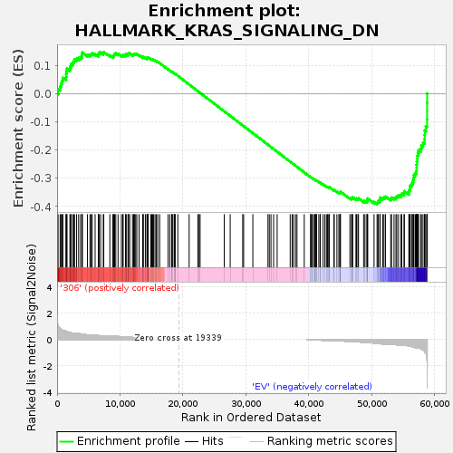

| | | Dataset | 306_EV_express.306_EV.cls#306_versus_EV |
| Phenotype | 306_EV.cls#306_versus_EV |
| Upregulated in class | EV |
| GeneSet | HALLMARK_KRAS_SIGNALING_DN |
| Enrichment Score (ES) | -0.39268336 |
| Normalized Enrichment Score (NES) | -1.2791171 |
| Nominal p-value | 0.023809524 |
| FDR q-value | 0.3133824 |
| FWER p-Value | 0.728 |
Table: GSEA Results Summary

Fig 1: Enrichment plot: HALLMARK_KRAS_SIGNALING_DN
Profile of the Running ES Score & Positions of GeneSet Members on the Rank Ordered List
| SYMBOL | TITLE | RANK IN GENE LIST | RANK METRIC SCORE | RUNNING ES | CORE ENRICHMENT | | 1 | TLX1 | NNN | 158 | 1.051 | 0.0159 | No |
| 2 | PDCD1 | NNN | 485 | 0.828 | 0.0249 | No |
| 3 | COPZ2 | NNN | 618 | 0.780 | 0.0364 | No |
| 4 | C5 | NNN | 811 | 0.718 | 0.0458 | No |
| 5 | ACTC1 | NNN | 919 | 0.698 | 0.0563 | No |
| 6 | CHST2 | NNN | 1427 | 0.621 | 0.0586 | No |
| 7 | GP1BA | NNN | 1454 | 0.616 | 0.0691 | No |
| 8 | SYNPO | NNN | 1483 | 0.613 | 0.0794 | No |
| 9 | MYH7 | NNN | 1582 | 0.599 | 0.0883 | No |
| 10 | NRIP2 | NNN | 2039 | 0.540 | 0.0901 | No |
| 11 | COL2A1 | NNN | 2148 | 0.526 | 0.0975 | No |
| 12 | SLC16A7 | NNN | 2216 | 0.515 | 0.1055 | No |
| 13 | RSAD2 | NNN | 2498 | 0.482 | 0.1092 | No |
| 14 | NPY4R | NNN | 2633 | 0.482 | 0.1154 | No |
| 15 | SLC38A3 | NNN | 2779 | 0.476 | 0.1213 | No |
| 16 | IL5 | NNN | 3104 | 0.465 | 0.1240 | No |
| 17 | ALOX12B | NNN | 3424 | 0.457 | 0.1267 | No |
| 18 | EDN2 | NNN | 3728 | 0.427 | 0.1290 | No |
| 19 | CAPN9 | NNN | 3960 | 0.408 | 0.1323 | No |
| 20 | ENTPD7 | NNN | 3970 | 0.407 | 0.1393 | No |
| 21 | KRT5 | NNN | 4017 | 0.403 | 0.1457 | No |
| 22 | CNTFR | NNN | 4828 | 0.352 | 0.1381 | No |
| 23 | THRB | NNN | 5224 | 0.338 | 0.1373 | No |
| 24 | INSL5 | NNN | 5416 | 0.328 | 0.1398 | No |
| 25 | MYOT | NNN | 5586 | 0.328 | 0.1427 | No |
| 26 | ARHGDIG | NNN | 6044 | 0.322 | 0.1406 | No |
| 27 | NR4A2 | NNN | 6584 | 0.299 | 0.1367 | No |
| 28 | BTG2 | NNN | 6596 | 0.298 | 0.1418 | No |
| 29 | TAS2R4 | NNN | 6668 | 0.294 | 0.1458 | No |
| 30 | KMT2D | NNN | 6921 | 0.278 | 0.1464 | No |
| 31 | CD80 | NNN | 7345 | 0.274 | 0.1440 | No |
| 32 | EPHA5 | NNN | 7424 | 0.274 | 0.1475 | No |
| 33 | GP2 | NNN | 8385 | 0.274 | 0.1360 | No |
| 34 | CD207 | NNN | 8865 | 0.269 | 0.1326 | No |
| 35 | CYP39A1 | NNN | 8987 | 0.263 | 0.1352 | No |
| 36 | CDH16 | NNN | 9076 | 0.258 | 0.1382 | No |
| 37 | KLHDC8A | NNN | 9140 | 0.255 | 0.1416 | No |
| 38 | YBX2 | NNN | 9329 | 0.247 | 0.1428 | No |
| 39 | SIDT1 | NNN | 9690 | 0.235 | 0.1408 | No |
| 40 | SERPINA10 | NNN | 10220 | 0.215 | 0.1356 | No |
| 41 | P2RY4 | NNN | 10443 | 0.206 | 0.1354 | No |
| 42 | IDUA | NNN | 10498 | 0.203 | 0.1381 | No |
| 43 | CALCB | NNN | 10875 | 0.191 | 0.1350 | No |
| 44 | SLC6A3 | NNN | 10952 | 0.189 | 0.1371 | No |
| 45 | HNF1A | NNN | 10953 | 0.189 | 0.1404 | No |
| 46 | ADRA2C | NNN | 11265 | 0.184 | 0.1384 | No |
| 47 | AKR1B10 | NNN | 11310 | 0.182 | 0.1408 | No |
| 48 | SGK1 | NNN | 11355 | 0.181 | 0.1433 | No |
| 49 | MX1 | NNN | 11549 | 0.174 | 0.1431 | No |
| 50 | RGS11 | NNN | 11989 | 0.160 | 0.1384 | No |
| 51 | DLK2 | NNN | 12164 | 0.155 | 0.1382 | No |
| 52 | SLC30A3 | NNN | 12233 | 0.153 | 0.1397 | No |
| 53 | CELSR2 | NNN | 12337 | 0.150 | 0.1406 | No |
| 54 | STAG3 | NNN | 12493 | 0.145 | 0.1405 | No |
| 55 | LFNG | NNN | 12677 | 0.142 | 0.1399 | No |
| 56 | TCF7L1 | NNN | 13037 | 0.132 | 0.1361 | No |
| 57 | TGFB2 | NNN | 13612 | 0.117 | 0.1284 | No |
| 58 | P2RX6 | NNN | 13627 | 0.117 | 0.1302 | No |
| 59 | LYPD3 | NNN | 13713 | 0.114 | 0.1308 | No |
| 60 | FGFR3 | NNN | 14026 | 0.107 | 0.1274 | No |
| 61 | DTNB | NNN | 14279 | 0.101 | 0.1249 | No |
| 62 | SLC25A23 | NNN | 14312 | 0.100 | 0.1261 | No |
| 63 | SNN | NNN | 14413 | 0.098 | 0.1261 | No |
| 64 | ATP6V1B1 | NNN | 14448 | 0.097 | 0.1272 | No |
| 65 | PTPRJ | NNN | 14472 | 0.097 | 0.1286 | No |
| 66 | BRDT | NNN | 14892 | 0.088 | 0.1230 | No |
| 67 | LGALS7 | NNN | 15043 | 0.084 | 0.1219 | No |
| 68 | CLPS | NNN | 15198 | 0.082 | 0.1207 | No |
| 69 | SPTBN2 | NNN | 15347 | 0.082 | 0.1196 | No |
| 70 | ABCG4 | NNN | 15564 | 0.077 | 0.1173 | No |
| 71 | TEX15 | NNN | 15761 | 0.073 | 0.1152 | No |
| 72 | TFCP2L1 | NNN | 15994 | 0.067 | 0.1125 | No |
| 73 | TG | NNN | 16302 | 0.063 | 0.1083 | No |
| 74 | CLSTN3 | NNN | 17643 | 0.037 | 0.0862 | No |
| 75 | THNSL2 | NNN | 17927 | 0.032 | 0.0819 | No |
| 76 | SNCB | NNN | 18223 | 0.026 | 0.0773 | No |
| 77 | BMPR1B | NNN | 18273 | 0.025 | 0.0769 | No |
| 78 | EFHD1 | NNN | 18395 | 0.022 | 0.0753 | No |
| 79 | CPEB3 | NNN | 18630 | 0.017 | 0.0716 | No |
| 80 | MTHFR | NNN | 18716 | 0.016 | 0.0704 | No |
| 81 | KRT13 | NNN | 18726 | 0.015 | 0.0705 | No |
| 82 | IGFBP2 | NNN | 18734 | 0.015 | 0.0707 | No |
| 83 | CDKAL1 | NNN | 19188 | 0.005 | 0.0630 | No |
| 84 | HTR1B | NNN | 20988 | 0.000 | 0.0323 | No |
| 85 | PTGFR | NNN | 22379 | 0.000 | 0.0086 | No |
| 86 | TSHB | NNN | 22580 | 0.000 | 0.0052 | No |
| 87 | SPRR3 | NNN | 22727 | 0.000 | 0.0027 | No |
| 88 | SSTR4 | NNN | 26571 | 0.000 | -0.0628 | No |
| 89 | FSHB | NNN | 27512 | 0.000 | -0.0788 | No |
| 90 | KRT1 | NNN | 29501 | 0.000 | -0.1127 | No |
| 91 | IFNG | NNN | 29649 | 0.000 | -0.1153 | No |
| 92 | NGB | NNN | 31113 | 0.000 | -0.1402 | No |
| 93 | VPREB1 | NNN | 33514 | 0.000 | -0.1811 | No |
| 94 | SOX10 | NNN | 33727 | 0.000 | -0.1848 | No |
| 95 | CLDN8 | NNN | 33994 | 0.000 | -0.1893 | No |
| 96 | ABCB11 | NNN | 34412 | 0.000 | -0.1964 | No |
| 97 | SCN10A | NNN | 34977 | 0.000 | -0.2060 | No |
| 98 | PAX4 | NNN | 37048 | 0.000 | -0.2413 | No |
| 99 | SMPX | NNN | 37357 | 0.000 | -0.2466 | No |
| 100 | NUDT11 | NNN | 37564 | 0.000 | -0.2501 | No |
| 101 | IRS4 | NNN | 37890 | 0.000 | -0.2556 | No |
| 102 | CD40LG | NNN | 38130 | 0.000 | -0.2597 | No |
| 103 | CYP11B2 | NNN | 39281 | 0.000 | -0.2793 | No |
| 104 | FGGY | NNN | 40303 | -0.014 | -0.2965 | No |
| 105 | GAMT | NNN | 40318 | -0.015 | -0.2965 | No |
| 106 | SKIL | NNN | 40474 | -0.019 | -0.2988 | No |
| 107 | MSH5 | NNN | 40551 | -0.020 | -0.2997 | No |
| 108 | RIBC2 | NNN | 40781 | -0.025 | -0.3032 | No |
| 109 | VPS50 | NNN | 40998 | -0.029 | -0.3063 | No |
| 110 | GTF3C5 | NNN | 41029 | -0.030 | -0.3063 | No |
| 111 | MYO15A | NNN | 41151 | -0.033 | -0.3078 | No |
| 112 | KCNN1 | NNN | 41181 | -0.033 | -0.3077 | No |
| 113 | BARD1 | NNN | 41244 | -0.035 | -0.3082 | No |
| 114 | YPEL1 | NNN | 41602 | -0.042 | -0.3135 | No |
| 115 | ASB7 | NNN | 41814 | -0.046 | -0.3163 | No |
| 116 | IL12B | NNN | 41844 | -0.047 | -0.3160 | No |
| 117 | KLK8 | NNN | 42279 | -0.056 | -0.3224 | No |
| 118 | GPR3 | NNN | 42565 | -0.062 | -0.3261 | No |
| 119 | SHOX2 | NNN | 42809 | -0.067 | -0.3291 | No |
| 120 | MAST3 | NNN | 42992 | -0.071 | -0.3310 | No |
| 121 | PLAG1 | NNN | 43065 | -0.073 | -0.3309 | No |
| 122 | RYR1 | NNN | 43240 | -0.077 | -0.3325 | No |
| 123 | SPHK2 | NNN | 43248 | -0.077 | -0.3313 | No |
| 124 | CCR8 | NNN | 44003 | -0.092 | -0.3425 | No |
| 125 | AMBN | NNN | 44042 | -0.092 | -0.3416 | No |
| 126 | HSD11B2 | NNN | 44474 | -0.092 | -0.3473 | No |
| 127 | MFSD6 | NNN | 44778 | -0.100 | -0.3507 | No |
| 128 | EGF | NNN | 44947 | -0.104 | -0.3517 | No |
| 129 | PRODH | NNN | 44976 | -0.104 | -0.3504 | No |
| 130 | PKP1 | NNN | 45016 | -0.105 | -0.3492 | No |
| 131 | GPRC5C | NNN | 45026 | -0.105 | -0.3475 | No |
| 132 | EDAR | NNN | 46540 | -0.140 | -0.3708 | No |
| 133 | CHRNG | NNN | 46803 | -0.148 | -0.3726 | No |
| 134 | ZNF112 | NNN | 46883 | -0.150 | -0.3713 | No |
| 135 | KCNMB1 | NNN | 46923 | -0.151 | -0.3693 | No |
| 136 | GPR19 | NNN | 46958 | -0.152 | -0.3672 | No |
| 137 | FGF16 | NNN | 47497 | -0.166 | -0.3735 | No |
| 138 | CACNA1F | NNN | 47579 | -0.168 | -0.3719 | No |
| 139 | UGT2B17 | NNN | 47801 | -0.176 | -0.3726 | No |
| 140 | SLC29A3 | NNN | 47902 | -0.179 | -0.3711 | No |
| 141 | KLK7 | NNN | 48718 | -0.207 | -0.3813 | No |
| 142 | PDK2 | NNN | 48931 | -0.217 | -0.3811 | No |
| 143 | NR6A1 | NNN | 49230 | -0.230 | -0.3822 | No |
| 144 | TFAP2B | NNN | 49297 | -0.232 | -0.3792 | No |
| 145 | TNNI3 | NNN | 49343 | -0.234 | -0.3758 | No |
| 146 | HTR1D | NNN | 49355 | -0.235 | -0.3719 | No |
| 147 | KCND1 | NNN | 50375 | -0.268 | -0.3845 | No |
| 148 | DCC | NNN | 50855 | -0.291 | -0.3875 | Yes |
| 149 | CPA2 | NNN | 50990 | -0.299 | -0.3846 | Yes |
| 150 | CACNG1 | NNN | 51061 | -0.301 | -0.3804 | Yes |
| 151 | CKM | NNN | 51313 | -0.308 | -0.3793 | Yes |
| 152 | PDE6B | NNN | 51326 | -0.309 | -0.3740 | Yes |
| 153 | IFI44L | NNN | 51336 | -0.311 | -0.3687 | Yes |
| 154 | CCDC106 | NNN | 51752 | -0.338 | -0.3698 | Yes |
| 155 | ATP4A | NNN | 51951 | -0.342 | -0.3671 | Yes |
| 156 | CAMK1D | NNN | 52188 | -0.355 | -0.3649 | Yes |
| 157 | CALML5 | NNN | 53026 | -0.357 | -0.3729 | Yes |
| 158 | CCNA1 | NNN | 53150 | -0.357 | -0.3686 | Yes |
| 159 | TENM2 | NNN | 53551 | -0.360 | -0.3691 | Yes |
| 160 | WNT16 | NNN | 53854 | -0.381 | -0.3675 | Yes |
| 161 | EDN1 | NNN | 53989 | -0.392 | -0.3629 | Yes |
| 162 | GDNF | NNN | 54267 | -0.413 | -0.3604 | Yes |
| 163 | NTF3 | NNN | 54657 | -0.417 | -0.3596 | Yes |
| 164 | SERPINB2 | NNN | 54785 | -0.417 | -0.3545 | Yes |
| 165 | RYR2 | NNN | 55146 | -0.435 | -0.3529 | Yes |
| 166 | CLDN16 | NNN | 55192 | -0.441 | -0.3459 | Yes |
| 167 | TGM1 | NNN | 55910 | -0.476 | -0.3497 | Yes |
| 168 | FGF22 | NNN | 55943 | -0.479 | -0.3418 | Yes |
| 169 | MAGIX | NNN | 56085 | -0.496 | -0.3355 | Yes |
| 170 | ITIH3 | NNN | 56095 | -0.498 | -0.3268 | Yes |
| 171 | ZC2HC1C | NNN | 56338 | -0.526 | -0.3217 | Yes |
| 172 | KRT15 | NNN | 56468 | -0.539 | -0.3143 | Yes |
| 173 | TFF2 | NNN | 56597 | -0.558 | -0.3067 | Yes |
| 174 | CPB1 | NNN | 56650 | -0.566 | -0.2976 | Yes |
| 175 | KCNE2 | NNN | 56713 | -0.572 | -0.2885 | Yes |
| 176 | SLC6A14 | NNN | 56943 | -0.609 | -0.2817 | Yes |
| 177 | PNMT | NNN | 57113 | -0.625 | -0.2735 | Yes |
| 178 | KCNQ2 | NNN | 57133 | -0.628 | -0.2627 | Yes |
| 179 | KRT4 | NNN | 57138 | -0.629 | -0.2517 | Yes |
| 180 | OXT | NNN | 57174 | -0.637 | -0.2411 | Yes |
| 181 | PAX3 | NNN | 57257 | -0.643 | -0.2311 | Yes |
| 182 | GRID2 | NNN | 57267 | -0.643 | -0.2199 | Yes |
| 183 | ZBTB16 | NNN | 57336 | -0.643 | -0.2097 | Yes |
| 184 | ARPP21 | NNN | 57458 | -0.648 | -0.2003 | Yes |
| 185 | PROP1 | NNN | 57799 | -0.690 | -0.1939 | Yes |
| 186 | TCL1A | NNN | 57898 | -0.716 | -0.1830 | Yes |
| 187 | NPHS1 | NNN | 58153 | -0.777 | -0.1736 | Yes |
| 188 | UPK3B | NNN | 58404 | -0.884 | -0.1622 | Yes |
| 189 | NOS1 | NNN | 58419 | -0.898 | -0.1466 | Yes |
| 190 | ITGB1BP2 | NNN | 58434 | -0.914 | -0.1307 | Yes |
| 191 | SCGB1A1 | NNN | 58612 | -1.029 | -0.1156 | Yes |
| 192 | PCDHB1 | NNN | 58803 | -1.543 | -0.0916 | Yes |
| 193 | SLC5A5 | NNN | 58809 | -1.677 | -0.0621 | Yes |
| 194 | MEFV | NNN | 58810 | -1.684 | -0.0324 | Yes |
| 195 | SLC12A3 | NNN | 58819 | -1.850 | 0.0002 | Yes |
Table: GSEA details [plain text format]
Fig 2: HALLMARK_KRAS_SIGNALING_DN
Blue-Pink O' Gram in the Space of the Analyzed GeneSet
Fig 3: HALLMARK_KRAS_SIGNALING_DN: Random ES distribution
Gene set null distribution of ES for HALLMARK_KRAS_SIGNALING_DN